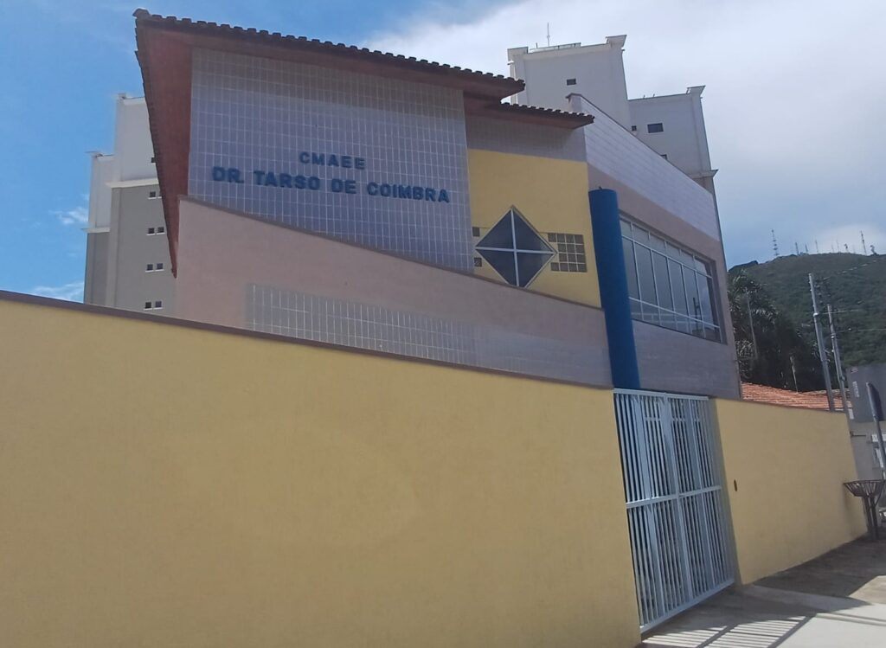
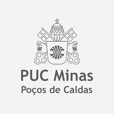

Nossa Missão
O propósito do projeto é promover acessibilidade e ensino de Matemática Básica a alunos da escola Tarso de Coimbra.
Instituição Tarso de Coimbra
O Centro Municipal de Atendimento Educacional Especializado Dr. Tarso de Coimbra, localizado em Poços de Caldas - MG, é uma escola pública que oferece Atendimento Educacional Especializado (AEE). Situada no bairro São Geraldo, a instituição se destaca pela sua acessibilidade, possuindo uma sala de recursos multifuncionais projetada para atender as necessidades específicas dos alunos. O ambiente escolar conta com uma biblioteca e uma sala de leitura, além de um ateliê de artes e cozinha com refeitório, garantindo uma alimentação saudável aos estudantes. A escola prioriza a tecnologia no processo de ensino, disponibilizando acesso à internet de banda larga e computadores portáteis. Com um forte compromisso com a sustentabilidade, a instituição realiza a separação de lixo e resíduos. Seu quadro de profissionais inclui fonoaudiólogos, tradutores e intérpretes de Libras, além de especialistas em segurança alimentar, todos dedicados a proporcionar uma educação de qualidade e inclusiva.
Inovação e Tecnologia a Serviço da Inclusão
No âmbito da disciplina de Seminários em Ciência da Computação da PUC Minas, nasceu uma parceria inovadora com a Escola Tarso de Coimbra, unindo tecnologia e educação inclusiva. Esta colaboração oferece aos estudantes a oportunidade única de desenvolver projetos reais com impacto social significativo.
Aprendizagem Multissensorial e Participativa
Desenvolvemos uma metodologia inovadora que combina conteúdos didáticos estruturados, recursos visuais significativos e exercícios interativos para criar uma experiência de aprendizagem completa e acessível.